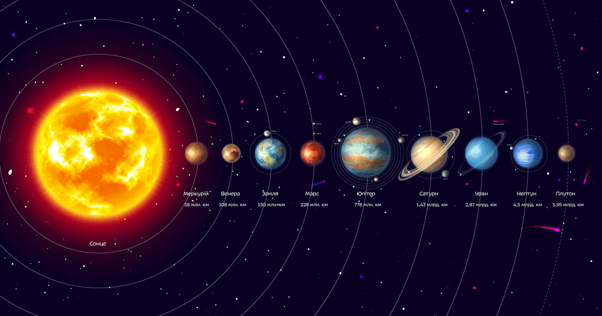

Що таке Космос і Всесвіт?
Космос – це простір за межами атмосфери Землі. Умовна межа – лінія
Кармана, приблизно 100 км над рівнем моря. Все, що вище – вже
космос.
Всесвіт – це вже все: космос, матерія, енергія, час, навіть те, що ми не
бачимо. Це система, яка виникла приблизно 13,8 млрд років тому
після Великого вибуху.
Сонячна система
Сонячна система — це планетна система, у центрі якої розташоване Сонце, а навколо нього за еліптичними орбітами обертаються вісім великих планет, їхні супутники, карликові планети, астероїди та інші космічні тіла.

Сонце — наша зоря
Центр системи - Сонце, яке містить 99.8% маси всієї Сонячної системи. Це розжарена газова куля, яка складається переважно з водню (близько 70%) та гелію (близько 28%). На поверхні Сонця температура сягає близько 6 000°C, а в його центрі — понад 15 мільйонів